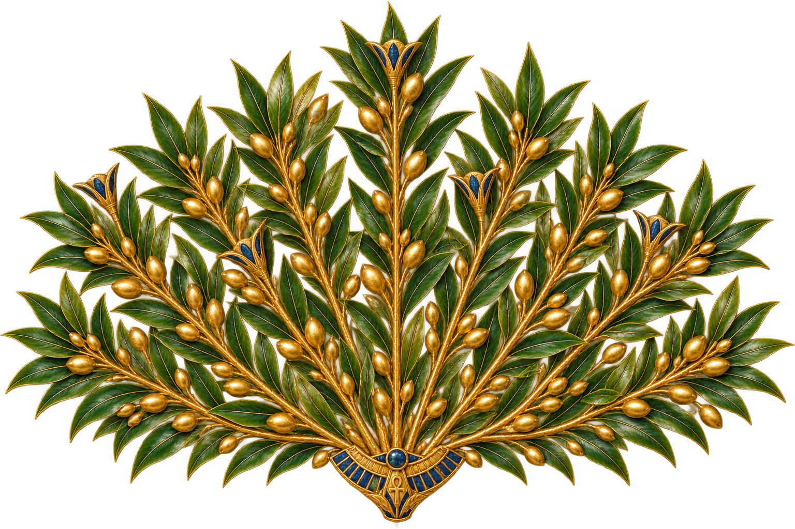
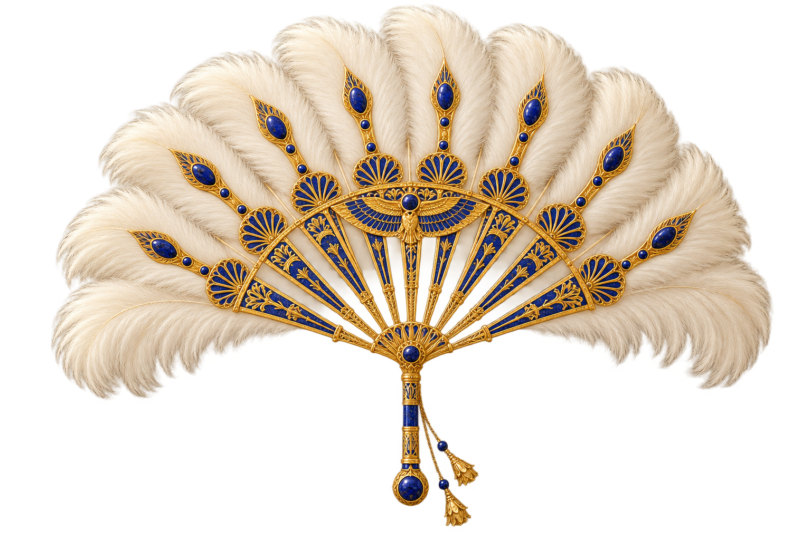

Cartas de Perguntas
Teste os conhecimentos sobre o Egito Antigo. Ao acertar, avance 2 casas. A regra da partida prevalece sobre o avanço de 1 casa impresso nas cartas.
Toque na carta para revelar

𓆣 Uma aventura no Egito Antigo 𓆣
Os mistérios do Nilo aguardam por você.
Vocês podem usar um dado físico ou lançar o dado digital.
Ao chegar sua vez, lance o dado.
SEU DESTINO
Toque para ver o verso
GUIA DA JORNADA
Use o tabuleiro físico para acompanhar os peões. Quando um jogador parar em uma casa de pergunta, faraó ou praga, retire uma carta do baralho correspondente. Leia a frente da carta e siga as instruções. Para jogar com dado físico, selecione essa opção no menu.
O primeiro jogador que alcançar as Três Pirâmides vence a travessia.